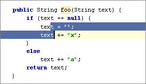
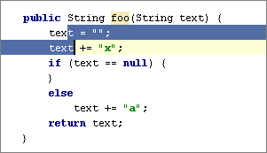
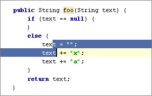

[コード] - [ステートメントを上/下へ移動] アクションは、変数の宣言文を変数の使用箇所の近くに移動する場合など、 ファイルのコード行を再構成する際に役立ちます。
例えば、2 つの行を選択して、 &shortcut:MoveStatementUp; や &shortcut:MoveStatementDown;を押してみてください。
The following pictures show an initial location of a code fragment, and the results of moving the selected fragment up and down.



何も選択されていない場合、カーソルの行が移動されます。